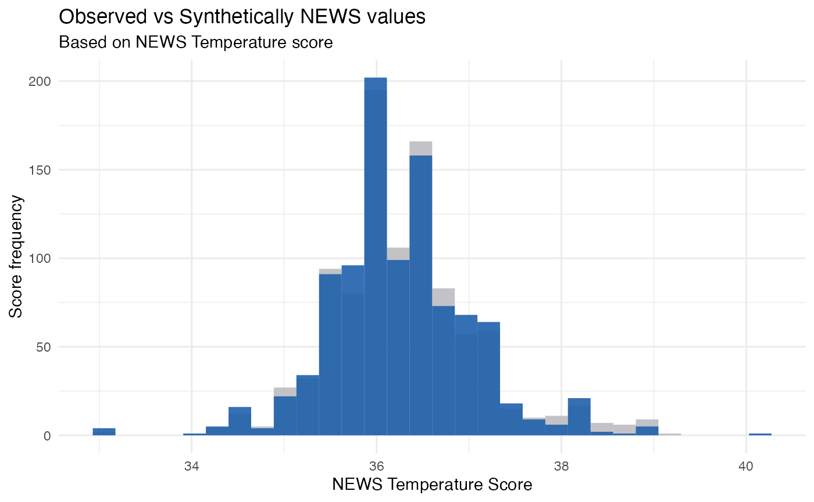

vignettes/synthetic_news_data.Rmd
synthetic_news_data.RmdThe goal is to generate a data set which contains no real units, therefore safe for public release and retains the structure of the data.
In other words, one can say that synthetic data contains all the characteristics of original data minus the sensitive content.
Synthetic data is generally made to validate mathematical models. This data is used to compare the behaviour of the real data against the one generated by the model.
The principle is to observe real-world statistic distributions from the original data and reproduce fake data by drawing simple numbers.
Consider a data set with \(p\) variables. In a nutshell, synthesis follows these steps:
Fitting statistical models to the original data and generating completely new records for public release. Joint distribution \(f(x_1,x_2,x_3,…,x_p)\) is approximated by a set of conditional distributions \(f(x_2|x_1)\).
The data this is based on is the NEWS Score devised by the Royal College of Physicians.
Synthetic data can be generated from new data, utilising the above metholodgy, on the real observed data:
library(readr)
library(dplyr)
#>
#> Attaching package: 'dplyr'
#> The following objects are masked from 'package:stats':
#>
#> filter, lag
#> The following objects are masked from 'package:base':
#>
#> intersect, setdiff, setequal, union
df <- suppressWarnings(read_csv("https://raw.githubusercontent.com/StatsGary/SyntheticNEWSData/main/observed_news_data.csv") %>%
dplyr::select(everything(), -X1))
#>
#> ── Column specification ────────────────────────────────────────────────────────
#> cols(
#> X1 = col_double(),
#> male = col_double(),
#> age = col_double(),
#> NEWS = col_double(),
#> syst = col_double(),
#> dias = col_double(),
#> temp = col_double(),
#> pulse = col_double(),
#> resp = col_double(),
#> sat = col_double(),
#> sup = col_double(),
#> alert = col_double(),
#> died = col_double()
#> )
glimpse(df)
#> Rows: 1,000
#> Columns: 12
#> $ male <dbl> 0, 1, 0, 1, 0, 0, 0, 0, 0, 0, 1, 0, 0, 0, 0, 1, 1, 0, 1, 0, 0, 1…
#> $ age <dbl> 68, 94, 85, 44, 77, 58, 25, 69, 91, 70, 87, 93, 61, 75, 97, 80, …
#> $ NEWS <dbl> 3, 1, 0, 0, 1, 1, 4, 0, 1, 1, 7, 2, 5, 1, 1, 3, 1, 5, 0, 2, 1, 2…
#> $ syst <dbl> 150, 145, 169, 154, 122, 146, 65, 116, 162, 132, 110, 166, 123, …
#> $ dias <dbl> 98, 67, 69, 106, 67, 106, 42, 56, 72, 96, 85, 90, 78, 80, 72, 81…
#> $ temp <dbl> 36.8, 35.0, 36.2, 36.9, 36.4, 35.3, 35.6, 37.2, 35.5, 35.3, 37.0…
#> $ pulse <dbl> 78, 62, 54, 80, 62, 73, 72, 90, 60, 67, 95, 87, 93, 65, 89, 145,…
#> $ resp <dbl> 26, 18, 18, 17, 20, 20, 12, 16, 16, 16, 24, 16, 26, 12, 16, 16, …
#> $ sat <dbl> 96, 96, 96, 96, 95, 98, 99, 97, 99, 97, 87, 95, 96, 96, 98, 99, …
#> $ sup <dbl> 0, 0, 0, 0, 0, 0, 0, 0, 0, 0, 1, 0, 0, 0, 0, 0, 0, 1, 0, 0, 0, 0…
#> $ alert <dbl> 0, 0, 0, 0, 0, 0, 0, 0, 0, 0, 0, 0, 0, 0, 0, 0, 0, 0, 0, 0, 0, 0…
#> $ died <dbl> 0, 0, 0, 0, 0, 0, 0, 0, 0, 0, 0, 0, 0, 0, 0, 0, 0, 0, 0, 0, 0, 0…This reads in the observed NEWS data from the GitHub repository. Now, we will utilise the synthpop package to create a synthetically generated dataset.
As stated, now we will use the real observed data and generate a synthetic set, utilising the equations and process mapped out in the preceeding sections:
library(synthpop)
#> Find out more at https://www.synthpop.org.uk/
syn_df <- syn(df,seed=4321)
#> Warning: In your synthesis there are numeric variables with 5 or less levels:
#> male, sup, alert, died. Consider changing them to factors.
#> You can do it using parameter `minnumlevels`.
#>
#> Synthesis
#> -----------
#> male age NEWS syst dias temp pulse resp sat sup
#> alert died
#### synthetic data
synthetic_news_data <- syn_df$syn
glimpse(synthetic_news_data)
#> Rows: 1,000
#> Columns: 12
#> $ male <dbl> 1, 1, 0, 1, 1, 0, 0, 1, 1, 1, 0, 1, 0, 0, 1, 0, 1, 0, 0, 1, 0, 1…
#> $ age <dbl> 56, 50, 74, 56, 52, 21, 37, 81, 67, 67, 56, 48, 76, 57, 43, 58, …
#> $ NEWS <dbl> 1, 2, 6, 1, 0, 2, 1, 2, 5, 0, 1, 1, 0, 1, 1, 1, 1, 1, 3, 0, 1, 6…
#> $ syst <dbl> 126, 115, 143, 122, 153, 164, 101, 125, 182, 160, 142, 122, 132,…
#> $ dias <dbl> 84, 84, 86, 60, 89, 92, 57, 74, 103, 80, 113, 71, 59, 71, 89, 11…
#> $ temp <dbl> 35.7, 36.8, 36.5, 36.3, 36.2, 35.5, 35.6, 36.6, 37.1, 36.2, 35.3…
#> $ pulse <dbl> 72, 94, 82, 94, 78, 97, 76, 71, 95, 86, 73, 62, 88, 70, 63, 100,…
#> $ resp <dbl> 17, 14, 21, 12, 12, 20, 15, 17, 18, 18, 18, 16, 19, 16, 18, 18, …
#> $ sat <dbl> 98, 97, 93, 98, 96, 99, 98, 97, 94, 98, 98, 100, 99, 97, 97, 96,…
#> $ sup <dbl> 0, 0, 0, 0, 0, 0, 0, 0, 1, 0, 0, 0, 0, 0, 0, 0, 0, 0, 1, 0, 0, 1…
#> $ alert <dbl> 0, 0, 0, 0, 0, 0, 0, 0, 0, 0, 0, 0, 0, 0, 0, 0, 0, 0, 0, 0, 0, 0…
#> $ died <dbl> 0, 0, 0, 0, 0, 0, 0, 0, 0, 0, 0, 0, 0, 0, 0, 0, 1, 0, 0, 0, 0, 0…
library(ggplot2)
#Create temperature tibbles to compare observed vs synthetically generated labels
obs <- tibble(label="observed_data", value = df$temp)
synth <- tibble(label="synthetic_data",value = synthetic_news_data$temp)
#Merge the frames together to get a comparison
merged <- obs %>%
bind_rows(synth)
#Create the plot
plot <- merged %>%
ggplot(aes(value, fill = label)) +
geom_histogram(alpha = 0.9, position = 'identity') + theme_minimal() +
scale_fill_manual(values=c("#BCBDC1", "#2061AC")) +
labs(title="Observed vs Synthetically NEWS values",
subtitle="Based on NEWS Temperature score",
x="NEWS Temperature Score", y="Score frequency") +
theme(legend.position = "none")
print(plot)
#> `stat_bin()` using `bins = 30`. Pick better value with `binwidth`.
This dataset is available from the NHSRDatasets package and similar comparisons can be made with the above. These examples can be used for data wrangling and data visualisation.
For mode information about the synthpop package.
In many ways, synthetic data reflects George Box’s observation that “all models are wrong, but some are useful” while providing a “useful approximation [of] those found in the real world,”
The connection between the clinical outcomes of a patient visits and costs rarely exist in practice, so being able to assess these trade-offs in synthetic data allow for measurement and enhancement of the value of care – cost divided by outcomes.
Synthetic data is likely not a 100% accurate depiction of real-world outcomes, like cost and clinical quality, but rather a useful approximation of these variables. Moreover, synthetic data is constantly improving, and methods like validation and calibration will continue to make these data sources more realistic.
Besides synthetic data used to protect the privacy and confidentiality of set of data, it can be used for testing fraud detection systems by creating realistic behaviour profiles for users and attackers. In machine learning, it can also be used to train and test models. The synthetic data can aid in creating a baseline for future testing or studies such as clinical trial studies.